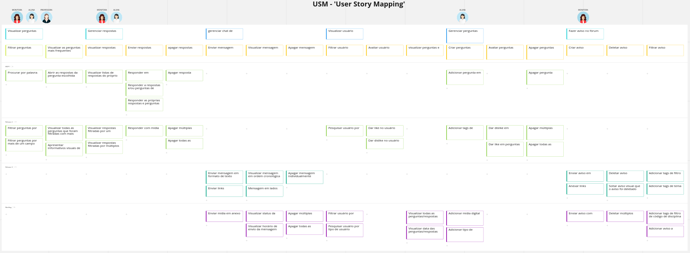
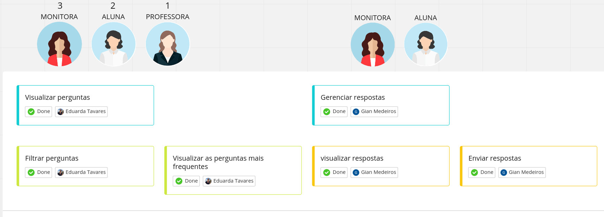
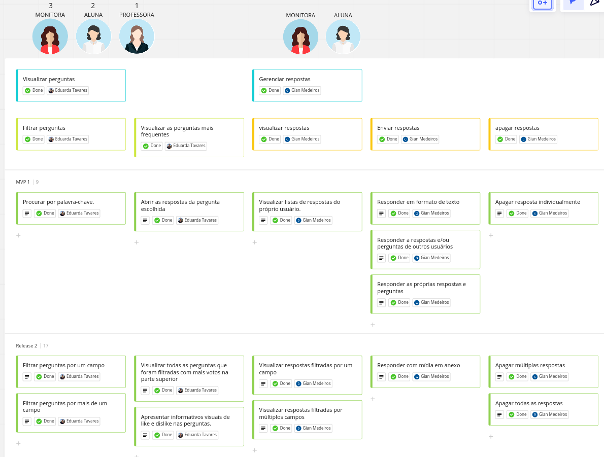

USM Canvas
Link de acesso ao miro: https://miro.com/app/board/uXjVP33_snA=/?share_link_id=676890663709
User Story Mapping

Personas:
1 - Professora
2 - Aluna
3 - Monitora
Objetivos:
Personas 1 + 2 + 3:
- Visualizar perguntas
Personas 2 + 3:
- Gerenciar respostas
- Gerenciar chat de conversa
- Visualizar usuário
Persona 2:
- Gerenciar perguntas
Persona 3:
- Fazer aviso no fórum de monitoria
atividades:
Visualizar perguntas:
- Filtrar perguntas
- visualizar as perguntas mais frequentes
Gerenciar respostas:
- Visualizar respostas
- Enviar respostas
- Apagar respostas
Gerenciar chat de conversa:
- Enviar mensagem
- Visualizar mensagem
- Apagar mensagem
Visualizar usuário:
- Filtrar usuário
- Avaliar usuário
- Visualizar perguntas e respostas
Gerenciar perguntas:
- Criar perguntas
- Avaliar perguntas
- Apagar perguntas
Fazer aviso no fórum de monitoria:
- Criar aviso
- Deletar aviso
- Filtrar aviso

User Storys:
Filtrar perguntas
-
Procurar por palavra-chave
- Eu como usuário quero poder filtrar perguntas por palavras-chave para que eu possa encontrar perguntas mais facilmente.
-
Filtrar perguntas por um campo
- Eu como usuário quero poder filtrar perguntas por um determinado campo para que eu possa encontrar perguntas de um tema específico.
-
Filtrar perguntas por mais de um campo
- Eu como usuário quero poder filtrar perguntas por mais de um campo para poder realizar buscas por temas relacionados.
Visualizar as perguntas mais frequentes
-
Abrir as respostas da pergunta escolhida
- Eu como usuário quero poder selecionar uma pergunta dentre a lista visualizada para obter mais dados sobre a mesma.
-
Visualizar todas as perguntas que foram filtradas com mais votos na parte superior
- Eu como usuário quero poder visualizar uma lista de perguntas que foram filtradas onde as perguntas de maior quantidade de votos positivos estejam na parte superior da lista para que seja possível identificar as perguntas de maior importância.
-
Visualizar todas as perguntas que foram filtradas com mais votos na parte superior
- Eu como usuário quero poder visualizar uma lista de perguntas que foram filtradas onde as perguntas de maior quantidade de votos positivos estejam na parte superior da lista para que seja possível identificar as perguntas de maior importância.
-
Apresentar informativos visuais de like e dislike nas perguntas
- Eu como usuário quero poder visualizar a quantidade de likes (votos positivos) e dislikes (votos negativos) das perguntas para que eu possa saber a avaliação de outros usuários sobre as perguntas sem que tenha que seleciona-las antes.
Visualizar respostas
-
Visualizar listas de respostas do próprio usuário
- Eu como monitora e/ou aluna quero poder visualizar minhas próprias respostas para que eu possa ver se houve alguma atualização, como votos, respostas ou para me relembrar da mesma.
-
Visualizar respostas filtradas por um campo
- Eu como monitora e/ou aluna quero poder filtrar minhas respostas por um determinado campo para que eu possa encontrar determinada pergunta mais facilmente.
-
Visualizar respostas filtradas por múltiplos campos
- Eu como monitora e/ou aluna quero poder visualizar minhas respostas filtrando por múltiplos campos para que eu possa encontrar mais facilmente resposta de temas correlatos.
Responder
-
Responder em formato de texto
- Eu como monitora e/ou aluna quero poder responder perguntas em formato de texto para que eu possa ajudar outros usuários nos seus questionamentos de forma textual.
-
Responder a respostas e/ou perguntas de outros usuários
- Eu como monitora e/ou aluna quero poder responder a perguntas e/ou respostas de outros usuários para que eu possa responder duvidas de outros usuários.
-
Responder as próprias respostas e perguntas
- Eu como monitora e/ou aluna quero poder responder as minhas próprias perguntas e/ou respostas para que eu possa adicionar mais informações ou fazer ressalvas sobre algo que já foi dito.
-
Responder com mídia em anexo
- Eu como monitora e/ou aluna quero poder anexar conteúdos de mídia dentro de uma resposta para que eu consiga enviar mídias como fotos de resoluções para auxiliar no entendimento da resposta.
Apagar respostas
-
Apagar resposta individualmente
- Eu como monitora e/ou aluna quero poder apagar individualmente alguma resposta para que eu possa remover respostas com algum erro.
-
Apagar múltiplas respostas
- Eu como monitora e/ou aluna quero poder apagar múltiplas respostas simultaneamente para que possa apagar varias respostas de forma simultânea.
-
Apagar todas as respostas
- Eu como monitora e/ou aluna quero poder apagar todas as respostas de uma única ação para que não seja necessário selecionar todos os itens para a exclusão.
Enviar mensagem
-
Enviar mensagem em formato de texto
- Eu como monitora e/ou aluna quero poder enviar mensagens em formato de texto para poder entrar em contato com outros usuários.
-
Enviar links**
- Eu como monitora e/ou aluna quero poder enviar links por mensagem para que eu possa referenciar outros sites de forma mais direta.
-
Enviar mídia em anexo
- Eu como monitora e/ou aluna quero poder enviar enviar conteúdos de mídia em anexo da mensagem para que eu possa facilitar o compartilhamento de mídias que auxiliem na comunicação
Visualizar mensagem
-
visualizar mensagem em ordem cronológica
- Eu como monitora e/ou aluna quero poder visualizar as mensagens em ordem cronológica para que facilitar o seu entendimento.
-
Mensagem em lados opostos
- Eu como monitora e/ou aluna quero poder visualizar minhas mensagens no lado direito da tela e visualizar as mensagens do outro usuário a esquerda para que as mensagens estejam separadas visualmente.
-
Visualizar status da mensagem
- Eu como monitora e/ou aluna quero poder visualizar o status da mensagem (enviada e recebida) para que eu saiba se a mensagem foi enviada e/ou recebida com sucesso.
-
Visualizar horário de envio da mensagem
- Eu como monitora e/ou aluna quero poder visualizar o horário de envio da mensagem para que eu possa saber o horário de envio de mensagens antigas.
Apagar mensagem
-
Apagar mensagem individualmente
- Eu como monitora e/ou aluna quero poder apagar uma determinada mensagem para que eu possa apagar mensagens com algum erro.
-
Apagar múltiplas mensagens
- Eu como monitora e/ou aluna quero poder apagar múltiplas perguntas simultaneamente para que possa apagar varias mensagens de forma simultânea.
-
Apagar todas as mensagens
- Eu como monitora e/ou aluna quero poder apagar todas as mensagens de uma única ação para que não seja necessário selecionar todos os itens para a exclusão.
Filtrar usuário
-
Pesquisar usuário por nome
- Eu como monitora e/ou aluna quero poder pesquisar usuários pelo nome para que eu possa encontrar outros usuários mais facilmente.
-
Filtrar usuário por semestre
- Eu como monitora e/ou aluna quero poder filtrar usuários por número de semestre para que eu possa encontrar usuários por faixas de semestre.
-
Pesquisar usuário por tipo de usuário
- Eu como aluna e/ou monitora quero poder filtrar usuários pelo tipo de usuário (aluno, professor, monitor, secretaria) para que eu possa encontrar professores e monitores e outros usuários de forma simples.
Avaliar usuário
-
Dar like no usuário
- Eu como aluna e/ou monitora quero poder dar um like em determinado usuário para poder avaliar positivamente um usuário que ofereceu ajuda de forma positiva.
-
Dar dislike no usuário
- Eu como aluna e/ou monitora quero poder dar um dislike em determinado usuário para poder avaliar negativamente um usuário que ofereceu ajuda de forma negativa.
Visualizar perguntas e respostas
-
Visualizar todas as perguntas/respostas do usuário
- Eu como aluna e/ou monitora quero poder visualizar todas as perguntas e respostas de um determinado usuário para que eu possa encontrar mais perguntas e resposta de um determinado usuário.
-
Visualizar data das perguntas/respostas
- Eu como aluna e/ou monitora quero poder visualizar a data de publicação das perguntas e respostas para que eu possa saber o qual atualizada estão tais questionamentos e respostas.
Criar perguntas
-
Adicionar pergunta em formato de texto
- Eu como aluna quero poder adicionar perguntas em formato de texto para que eu possa tiver minhas dúvidas.
-
Adicionar tags de filtros
- Eu como aluna quero poder adicionar tags de filtro em minhas perguntas para que minha pergunta se enquadre no grupo correto.
-
Adicionar mídia digital em anexo da pergunta
- Eu como aluna quero poder adicionar mídia digital às perguntas para que eu possa expressar melhor minhas dúvidas.
-
Adicionar tipo de dificuldade da pergunta
- Eu como aluna quero poder adicionar um nível de dificuldade referente à minha pergunta para eu possa expressar a dificuldade para responder à pergunta.
Avaliar perguntas
-
Dar like em perguntas
- Eu como aluna quero poder dar um dislike em determinado pergunta para poder avaliar negativamente uma pergunta que esteja errada ou que seja anti-ético.
-
Dar deslike em perguntas
- Eu como aluna quero poder dar um like em determinada pergunta para poder avaliar positivamente uma pergunta me ajudou ou que eu gostasse de dar mais destaque.
Apagar perguntas
-
Apagar pergunta individualmente
- Eu como aluna quero poder apagar individualmente alguma pergunta para que eu possa remover perguntas que eu deseje apagar.
-
Apagar múltiplas perguntas
- Eu como aluna quero poder apagar múltiplas perguntas simultaneamente para que possa apagar varias perguntas de forma simultânea sem necessidade de remove-las individualmente.
-
Apagar todas as perguntas
- Eu como aluna quero poder apagar todas as mensagens para que possa apagar todas as perguntas sem ser necessário selecioná-las
Criar aviso
-
Enviar aviso em formato de texto
- Eu como quero poder enviar avisos de momentos de monitoria para que uma grande parte dos alunos consigam ver os avisos.
-
Anexar links
- Eu como monitora quero poder anexar links diversos no corpo dos avisos para que links de reunião e calendários sejam acessado mais facilmente.
-
Enviar aviso com tabela de horários
- Eu como monitora quero poder enviar minha tabela de horários no aviso para facilitar em encontrar horários em comum.
Deletar aviso
-
Deletar aviso individualmente
- Eu como monitora quero poder deletar de forma individual meu avisos para que eu possa remover avisos antigos ou com falhas.
-
Soltar aviso visual que o aviso foi deletado
- Eu como monitora quero poder receber alguma confirmação de que meu aviso foi removido para que eu possa ter certeza que o aviso foi deletado corretamente.
-
Deletar múltiplos avisos
- Eu como monitora quero poder deletar de forma múltipla meus avisos para que eu possa remover avisos antigos e/ou com falhas.
Filtrar aviso
-
Adicionar tags de filtro de disciplina
- Eu como monitora quero poder adicionar tags de filtro referentes a disciplinas nos meus avisos para que outros usuários possam encontra-los com mais facilidade.
-
Adicionar tags de filtro de tema
- Eu como monitora quero poder adicionar tags de filtro referentes a temas nos meus avisos para que outros usuários possam encontra-los com mais facilidade.
-
Adicionar tags de filtro de código de disciplina
- Eu como monitora quero poder adicionar tags de filtro referentes aos códigos de disciplinas nos meus avisos para que outros usuários possam encontra-los com mais facilidade.
-
Adicionar aviso a grupos de usuários
- Eu como monitora quero poder adicionar tags de filtro referentes a grupos de usuários nos meus avisos para que outros usuários possam ser notificados de determinados avisos.
